Portfolio Website
Personal responsive website built with HTML &
CSS. Focused on semantic structure, accessibility, and
clean layout.
Demo: Github
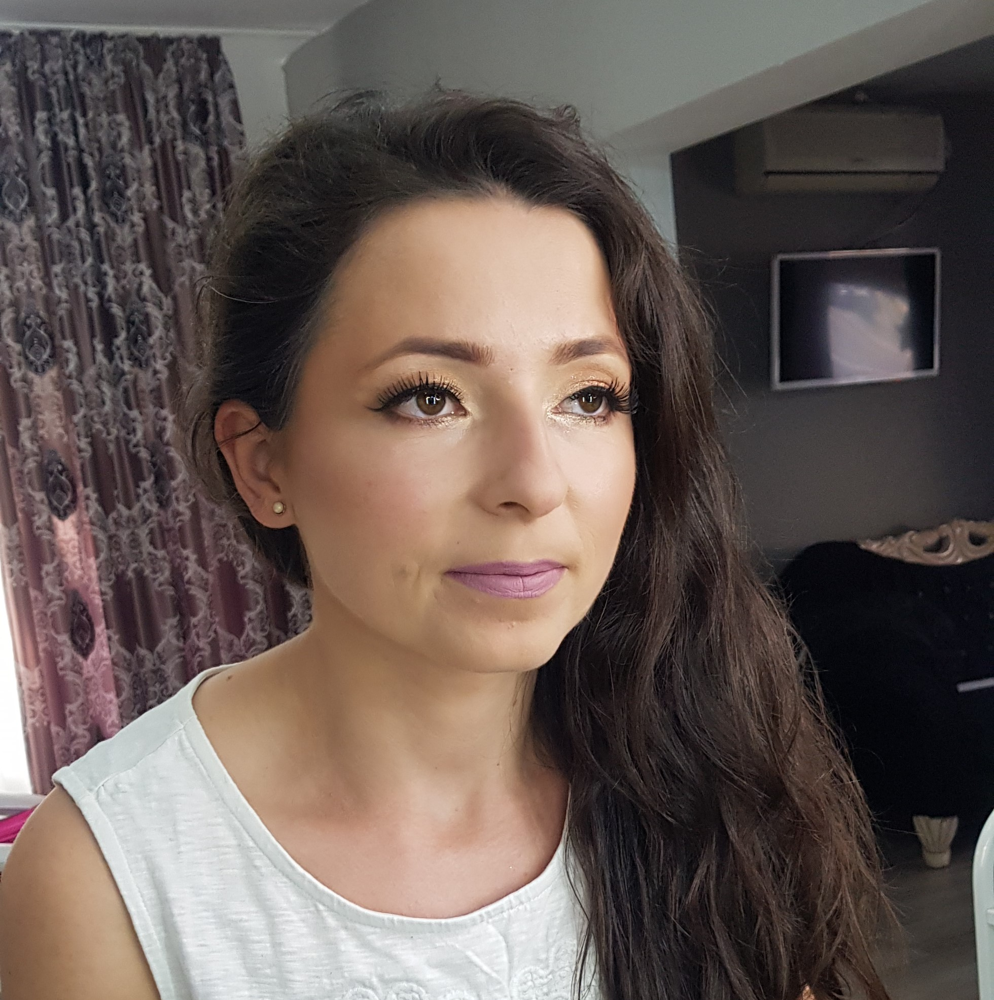
Junior Web Developer with a background in transport management and international work experience across Romania, UK, and Spain. Skilled in HTML, CSS, JavaScript, React, and Node.js. Passionate about building efficient, scalable digital solutions and continuously improving technical expertise.
Explore my repositories and coding projects:
Personal responsive website built with HTML &
CSS. Focused on semantic structure, accessibility, and
clean layout.
Demo: Github
Business presentation website for a transport company. Includes structured layout, responsive design, and service showcase.
Demo: Github
My experience in logistics has shaped the way I approach programming. In transport management, structure and organization are essential - just like writing clean and structured code.
Optimizing transport routes requires efficiency and logical thinking, the same mindset needed to build efficient algorithms and solve technical problems.
Every operational challenge strengthened my problem-solving skills and taught me how to stay calm under pressure — qualities that are equally important in the world of software development.
"Efficiency in logistics and efficiency in code follow the same principles."
Born in Romania in 1990, I built my career through determination, adaptability, and continuous growth. I spent the first 22 years of my life in Zalău, Romania. In 2012, I moved to London, UK, where I began working and gained valuable international experience over 13 years.
The year 2023 marked a significant turning point in my life. I relocated to Spain and stepped into the role of Transport Manager within our family business. In this position, I oversee logistics operations, manage regulatory compliance, coordinate daily transport activities, and ensure efficient operational performance.
In the same year, I started a Web Development course, which introduced me to the world of Full-Stack Development. This experience expanded my technical skills and strengthened my analytical thinking, problem-solving abilities, and understanding of digital systems.
My journey across three countries and across both operational management and technology has strengthened my resilience, cultural adaptability, leadership skills, and continuous desire to grow both professionally and personally.
| Language | Level |
|---|---|
| Romanian | native |
| English | advanced |
| Spanish | beginner |
| French | beginner |
My goal is to grow in the tech industry as a Full-Stack Developer while combining my operational management experience to build efficient and innovative digital solutions.
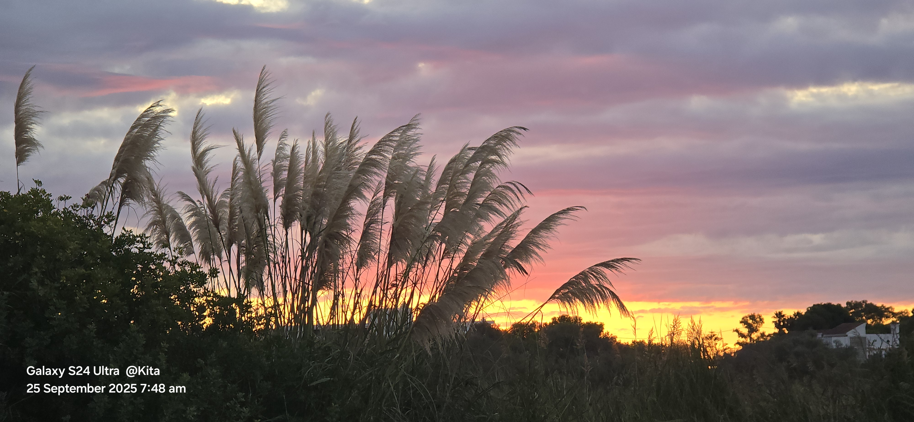
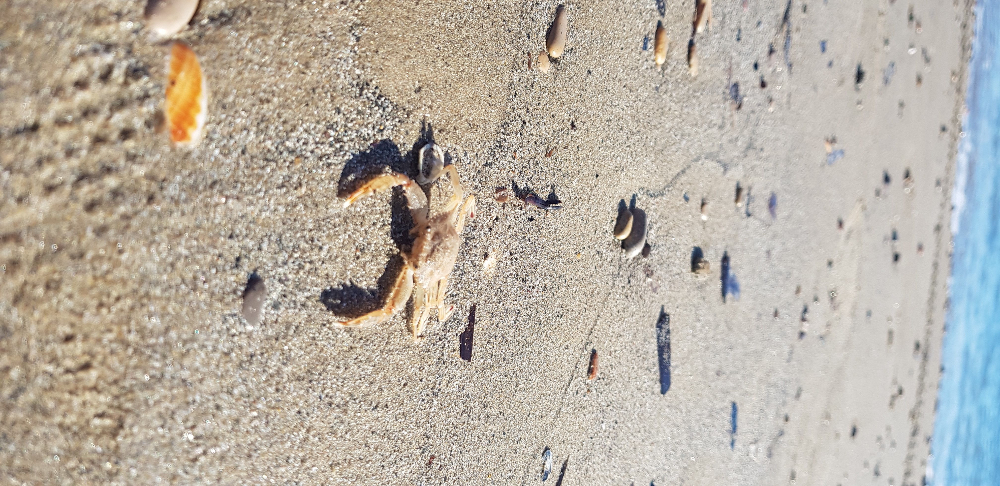

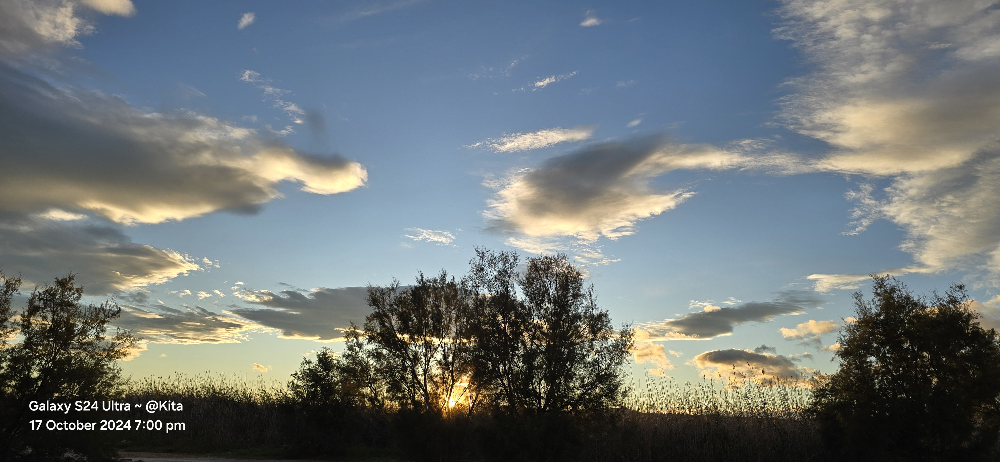
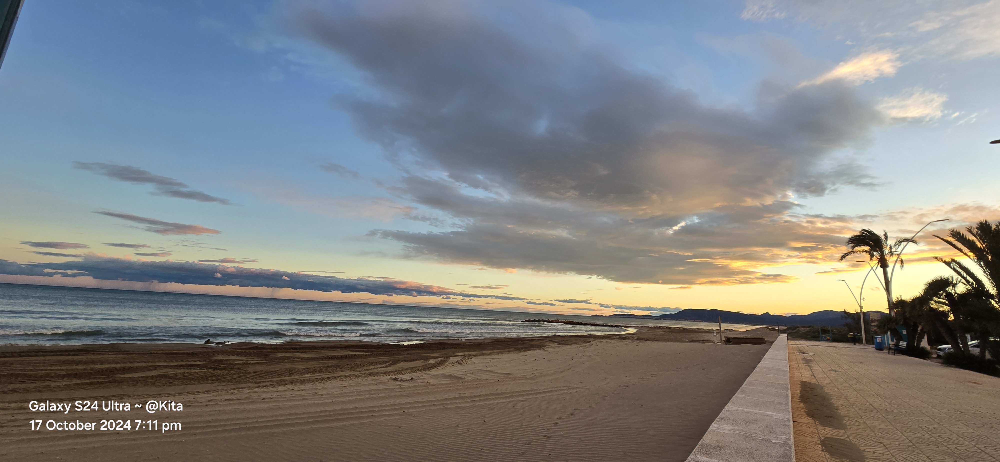
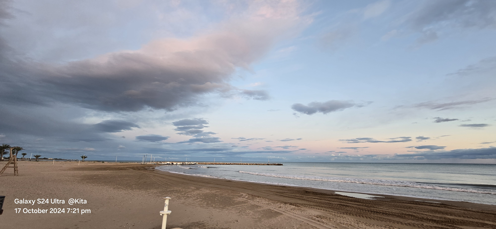
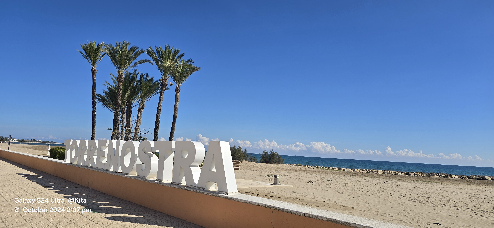
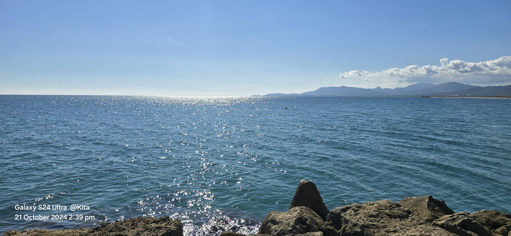
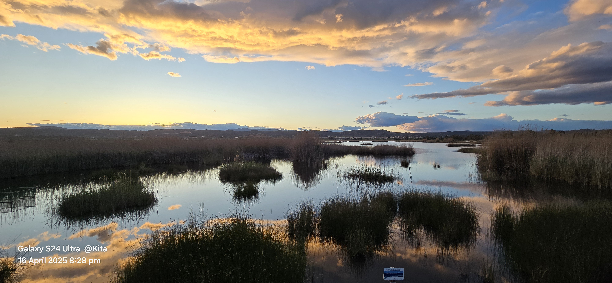
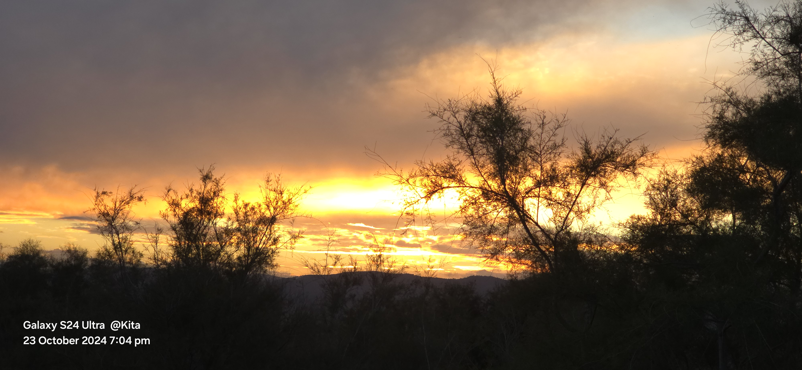
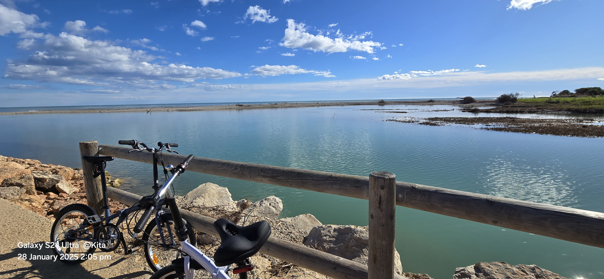
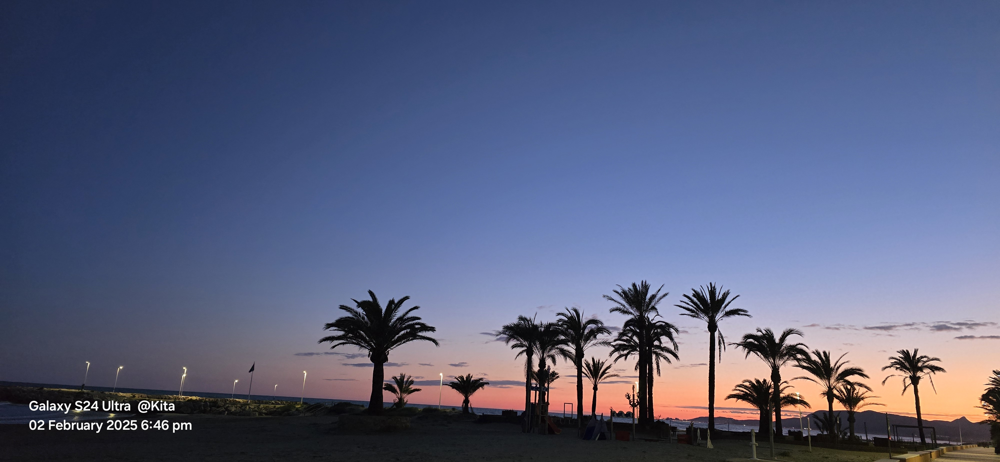
Actively seeking a Junior Web Developer opportunity. If you are looking for a motivated, disciplined, and adaptable developer, let's connect.